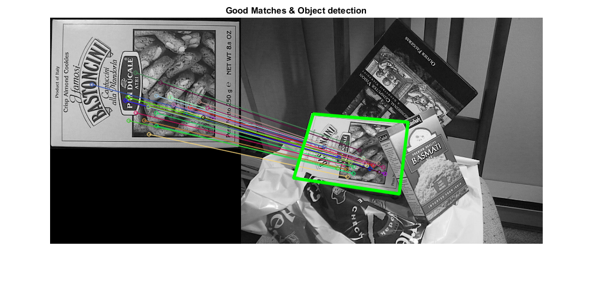

Feature Matching + Homography to find a known object
In this sample, you will use features2d and calib3d to detect an object in a scene.
You will learn how to:
- Use the function cv.findHomography to find the transform between matched keypoints.
- Use the function cv.perspectiveTransform to map the points.
Sources:
Contents
In a previous demo, we used a queryImage, found some feature points in it, we took another trainImage, found the features in that image too and we found the best matches among them. In short, we found locations of some parts of an object in another cluttered image. This information is sufficient to find the object exactly on the trainImage.
For that, we can use a function from calib3d module, cv.findHomography. If we pass the set of points from both the images, it will find the perpective transformation of that object. Then we can use cv.perspectiveTransform to find the object. It needs atleast four correct points to find the transformation.
We have seen that there can be some possible errors while matching which may affect the result. To solve this problem, algorithm uses Ransac or LMedS (which can be specificed in the Method option). So good matches which provide correct estimation are called inliers and remaining are called outliers. cv.findHomography returns a mask which specifies the inlier and outlier points.
Options
OPTS_FEATURE = 'SURF'; % detector: ORB, BRISK, AKAZE, KAZE, SIFT, SURF OPTS_FLANN = true; % matcher: FLANN or Brute Force OPTS_KNN_MATCH = false; % matcher method: match or knnMatch (k=2)
Input images
imgObj = cv.imread(fullfile(mexopencv.root(),'test','box.png'), 'Grayscale',true); imgScene = cv.imread(fullfile(mexopencv.root(),'test','box_in_scene.png'), 'Grayscale',true); subplot(1,3,1), imshow(imgObj), title('object') subplot(1,3,[2 3]), imshow(imgScene), title('scene')
Step 1: Detect the keypoints and extract descriptors using SURF
switch upper(OPTS_FEATURE) case 'SURF' detector = cv.SURF('HessianThreshold',400); case 'SIFT' detector = cv.SIFT(); case 'ORB' detector = cv.ORB(); case 'BRISK' detector = cv.BRISK(); case 'AKAZE' detector = cv.AKAZE(); case 'KAZE' detector = cv.KAZE(); otherwise error('unrecognized feature: %s', OPTS_FEATURE) end display(detector)
detector =
SURF with properties:
id: 2
HessianThreshold: 400
NOctaves: 4
NOctaveLayers: 3
Extended: 0
Upright: 0
[keyObj,featObj] = detector.detectAndCompute(imgObj); [keyScene,featScene] = detector.detectAndCompute(imgScene); fprintf('object: %d keypoints\n', numel(keyObj)); fprintf('scene: %d keypoints\n', numel(keyScene)); whos featObj featScene
object: 786 keypoints scene: 1040 keypoints Name Size Bytes Class Attributes featObj 786x64 201216 single featScene 1040x64 266240 single
Step 2: Matching descriptor vectors using FLANN matcher
if OPTS_FLANN if ~isempty(strfind(detector.defaultNorm(), 'Hamming')) opts = {'LSH', 'TableNumber',6, 'KeySize',12, 'MultiProbeLevel',1}; else opts = {'KDTree', 'Trees',5}; end matcher = cv.DescriptorMatcher('FlannBasedMatcher', 'Index',opts); else matcher = cv.DescriptorMatcher('BFMatcher', ... 'NormType',detector.defaultNorm()); end display(matcher)
matcher =
DescriptorMatcher with properties:
id: 33
Type: 'FlannBasedMatcher'
if OPTS_KNN_MATCH matches = matcher.knnMatch(featObj, featScene, 2); else matches = matcher.match(featObj, featScene); end fprintf('%d matches\n', numel(matches));
786 matches
Filter matches and keep only "good" ones
if OPTS_KNN_MATCH % ratio test dists = cellfun(@(m) m(1).distance, matches); idx = cellfun(@(m) (numel(m) == 2) && ... (m(1).distance < 0.75 * m(2).distance), matches); matches = cellfun(@(m) m(1), matches(idx)); else % distance less than k*min_dist dists = [matches.distance]; cutoff = 3 * min(dists); matches = matches(dists <= cutoff); fprintf('Min dist = %f\nMax dist = %f\nCutoff = %f\n', ... min(dists), max(dists), cutoff); end fprintf('%d good matches\n', numel(matches));
Min dist = 0.055168 Max dist = 0.644580 Cutoff = 0.165503 31 good matches
show original and filtered distances
if ~mexopencv.isOctave() %HACK: HISTOGRAM not implemented in Octave figure hh = histogram(dists); hold on histogram([matches.distance], hh.BinEdges) if OPTS_KNN_MATCH legend({'All', 'Good'}) else line([cutoff cutoff] + hh.BinWidth/2, ylim(), 'LineWidth',2, 'Color','r') legend({'All', 'Good', 'cutoff'}) end hold off title('Distribution of match distances') end
Get the keypoints from the good matches (Note: indices in C are zero-based while MATLAB are one-based)
ptsObj = cat(1, keyObj([matches.queryIdx]+1).pt); ptsScene = cat(1, keyScene([matches.trainIdx]+1).pt); whos ptsObj ptsScene
Name Size Bytes Class Attributes ptsObj 31x2 496 double ptsScene 31x2 496 double
Step 3: Compute homography
assert(numel(matches) >= 4, 'not enough matches for homography estimation'); [H,inliers] = cv.findHomography(ptsObj, ptsScene, 'Method','Ransac'); assert(~isempty(H), 'homography estimation failed'); inliers = logical(inliers); display(H) fprintf('Num outliers reported by RANSAC = %d\n', nnz(~inliers));
H =
0.4283 -0.1864 121.5736
0.0022 0.3643 162.5073
-0.0002 -0.0005 1.0000
Num outliers reported by RANSAC = 2
Step 4: Localize the object
% get the corners from the first image (the object to be "detected") [h,w,~] = size(imgObj); corners = [0 0; w 0; w h; 0 h]; display(corners) % apply the homography to the corner points of the box p = cv.perspectiveTransform(corners, H); display(p)
corners =
0 0
324 0
324 223
0 223
p =
121.5736 162.5073
282.7520 177.2785
267.8110 299.2625
89.2696 271.9903
Show results
% draw the final good matches imgMatches = cv.drawMatches(imgObj, keyObj, imgScene, keyScene, matches, ... 'NotDrawSinglePoints',true, 'MatchesMask',inliers); % draw lines between the transformed corners (the mapped object in the scene) p(:,1) = p(:,1) + w; % shift points for the montage image imgMatches = cv.polylines(imgMatches, p, 'Closed',true, ... 'Color',[0 255 0], 'Thickness',4, 'LineType','AA'); figure, imshow(imgMatches) title('Good Matches & Object detection')